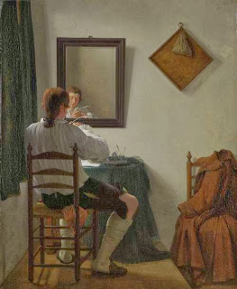

Yoma 38 - What is bad?
While earlier we mentioned the good deeds and stopped to praise the people who performed them, now we need to mention the bad ones. The family of Garmu possessed the secret of baking the Bread of Vision for the Temple, so that it would never crumble, and they did not want to teach this to anybody. Their official excuse was that they did not want it to fall into the wrong hands and be used in the service of idols. However, they were praised for never giving refined bread to their children, so that nobody would suspect them of using the Temple bread.
The family of Avtinas knew the secret of mixing the incense so that its smoke would always go straight up, and did not want to teach it, with the same excuse. Their good quality was that their women would never use perfume - to avoid the suspicion of using Temple's incense. Hugras the Levite knew a special way to produce captivating singing but refused to teach it, also not wishing it to be used for idols.
Ben Kamtzar would take four pens in his hand and write the four-letter name of God, finishing all the letters at the same moment, thus never leaving the name of God incomplete. He, too, did not want to teach this skill, but could not quote a selfless reason for it. Thus, the bad people are all mentioned together with derision, but any time we mention a good person, there is an additional blessing.
Art: A Writer Trimming His Pen by Jan the Younger Ekels